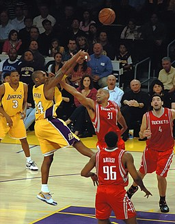

Hi, welcome to my website! My name is Edwin and I am a high-school student from Canada.
2004 was the year I was born and ever since I have been attempting to quench my never-ending
thirst for knowledge. I even enrolled in ICS3X0 to that end! This page will help you get to
know a little more about me and who I am.
My Intrests
I like to try new things. I feel that doing so builds character and is the only way you can know
if you like something. Albert Einstein once said; “A person who never made a mistake never tried
anything new”. This quote really stuck with me as I am a strong believer in the idea that we learn
from our mistakes so if I never try anything new, I am really missing out on the opportunity to learn.
Sports:
I like being active. So, from a young age, I participated in sports. My favourite sport is basketball and I started
playing in grade 6. I loved the game since I started playing but I wasn't any good until high school when I made the
basketball team. Last year I started playing rep basketball for 21 Hoops where I got the opportunity to play against
some really talented players. I am also an avid swimmer and lifesaver. I began swimming in grade 1- my parents never
had the opportunity as children so they wanted to make sure I did. In 2018, I finished all the levels in swimming and
attained my Bronze Cross. The following year, I began competing in lifesaving competitions and slowly climbed the ladder
till I won my first event, taking home the first-place prize. After grade 9, I became less competitive and now just
swim for fun- not since the pandemic of course. Also in grade 9, I discovered weightlifting. Being the active individual
I am, I enjoyed weightlifting very much and still do it to this day.

Hover Over Image
Games:
Being active takes a toll on your body, so after coming home and freshening up, I like to play video games. I started my
“gaming career” off with Fortnite when my parents bought us a PlayStation 4 for Christmas 2018. Since then, I have broadened
my video game interest to Call of Duty, Minecraft, Battlefront II, and Save The World. Paradoxically, the pandemic has made me
play video games less and now I mainly play Call of Duty as I can. I also play chess. I first learned about chess from my dad
years ago but now I have gotten into it more than ever. I play on chess.com and my rating has increased from 800 to 1200 in
the past few months. (1700 now)
Here's a little puzzle for you to put your chess skills to the test! Black to move, checkmate in 2 moves...
My Media Taste:
I have watched all kinds of movies and TV shows but I have a very fine-tuned taste in what I call great pieces of work. My list
of TV shows has over 80 shows so coming up with my favourite few is a challenge. Nonetheless, my top 3 shows are Game of Thrones,
The Walking Dead, and 3%. These shows are really entertaining and well made so I definitely recommend them. Musically, I mainly
listen to modern hip-hop but still appreciate 90s hip-hop in its own right. My favourite song right now is Middle Child by J. Cole
and there’s a link below if you're up for a listen. Contemporary music is great, but I have recently gotten into classical music
namely songs like Requiem for a Dream by Mozart, Palladio by Kevin Jenkins, and Ode to Joy by Beethoven.
I grew up in Southern Ontario and had a keen interest in learning things. In grade 2 my parents enrolled me in Kumon where I first
realized my love for math. In grade 6, after winning the grade 8 gauss math competition at my school, I wanted a greater challenge
and enrolled in Spirit of Math. This provided me with a greater understanding of mathematics and with my understanding, my love for
math proportionally. When high school rolled around, I was introduced to the various things I could do with math in the future and
discovered physics. I instantly became absorbed in it and wanted to incorporate it into my future career. This semester, I am formally
learning physics for the first time and I'm loving it so far. I can't wait to see what the future holds for my career and life.
Here is my Gauss Math Competition Certificate
My Future
Career Path:
After high school, I want to study at the University of Toronto in the Engineering Sciences program and major in Aerospace Engineering.
This is no easy task as the program is very competitive so I am working hard so that I can achieve my goals. After graduation from the
program, I may or may not be interested in a master’s degree to broaden my horizons. After graduation, I will seek a job at prestigious
companies whose work interests me. Such companies include NASA, SpaceX, and Lockheed Martin.
Fun Fact!
I am a Flight Sergeant with the 789 Air Cadet Squadron!!
What Else Is To Come?
Last summer, my friends and I created a non-profit organization and raised money for long-term care homes that are struggling during the
pandemic. I would like to repeat this in the coming summer for a different cause if the same one is dealt with since I am capable of giving
back to the community so I believe it is my duty to do so. Aside from civil involvement, I have the ambition to start a business in the near
future. I am already invested in the stock market so a business would be the perfect thing for me to generate passive income so I can be
financially stable in the future.